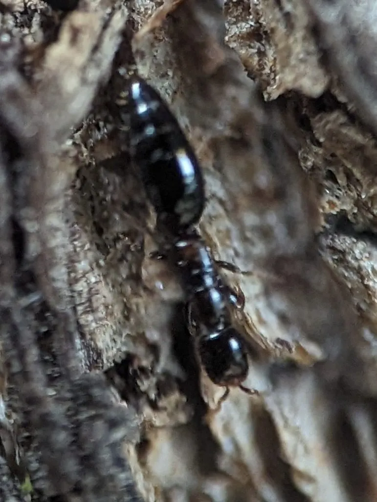

昆虫 · 动物界
管氏肿腿蜂 Sclerodermus guani

体细长如蚁的小型寄生蜂，雌蜂钻入天牛蛀道，在幼虫体表产卵，是中国防治蛀干害虫的重要天敌。
- 分类
- 门节肢动物门纲昆虫纲目膜翅目科肿腿蜂科属肿腿蜂属
- 栖息环境
- 杨树、柳树、松树等蛀干害虫发生的林带与果园
- 地理分布
- 中国华北、东北、西北的防护林与果园，多人工释放
- 保护级别
- 天敌昆虫，人工繁育释放，无保护需求
物种志
管氏肿腿蜂的雌蜂体长约三毫米，形似蚂蚁，体黄褐至黑褐色，头部扁平，胸部细长，多数个体翅退化不能飞行，只能靠爬行钻进树木的蛀道。雄蜂有翅，体色较深，寿命很短。雌蜂尾部有针状产卵器，找到天牛幼虫后先将其麻痹，再把卵产在虫体表面，幼虫孵出后就在寄主体表取食。
它自然分布于中国北方，因由中国昆虫学家管氏而得名，是林木蛀干害虫的重要天敌。雌蜂能循着蛀道里的气味和振动找到寄主，一头天牛幼虫上可育出数十头蜂，老熟幼虫在蛀道内结茧化蛹。天牛幼虫藏得深、药剂难以触及，释放肿腿蜂便成为防治光肩星天牛和松墨天牛的重要手段，在北方防护林和果园中应用广泛。
形态与习性
- 体长雌蜂约三毫米，形似蚂蚁
- 翅雌蜂多无翅或翅退化，靠爬行
- 寄主天牛等蛀干害虫的幼虫
- 寄生方式麻痹寄主后在体表产卵，幼虫外寄生
- 繁育量一头寄主可育出数十头蜂
- 用途防治光肩星天牛、松墨天牛
趣味知识
- 雌蜂没有可用的翅膀，只能沿着树干裂缝一路爬进天牛的蛀道。
- 它先给天牛幼虫打一针麻药，让对方动弹不得，再把卵产在虫体上慢慢享用。
- 天牛幼虫躲在木头深处喷药够不着，小小肿腿蜂却能钻进去把它们清掉。